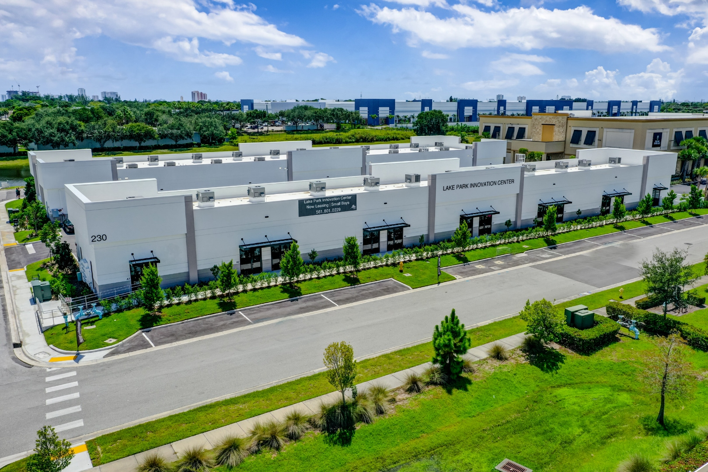

Smart glass, also called dynamic or switchable glass, has moved from novelty to legitimate commercial specification over the last decade. Electrochromic glass from SageGlass and View now appears on Class-A office, healthcare, and institutional projects. SPD and PDLC fill specific niches where dynamic solar or privacy control adds measurable value. In Florida, where cooling dominates the annual HVAC load and solar heat gain drives peak demand, the energy math for dynamic glazing is different from northern climates. This article covers the smart glass product categories currently available for commercial specification, cost premiums, integration with building management systems, and where the technology makes sense on Florida commercial projects.

The Smart Glass Categories
Four major technology families carry commercial smart glass specifications:
Electrochromic (EC)
Electrochromic glass uses a thin-film stack of metal oxides that changes tint state when a low-voltage electric current is applied. The tint is stable without continuous power; once set, the glass holds its state with minimal energy draw. Tint transition typically takes several minutes from clear to fully tinted, depending on pane size and temperature. Visible light transmittance ranges from roughly 60 percent clear to 1 percent in darkest tint state, with matching SHGC control.
Leading manufacturers: SageGlass (Saint-Gobain), View Glass. Both are full commercial product lines with multi-zone control, BMS integration, and specification tools. EC is the most mature smart glass category for commercial work.
SPD (Suspended Particle Device)
SPD glass contains a thin film of suspended light-absorbing particles that align with an electric field when voltage is applied, allowing light through, and randomize when power is cut, blocking light. SPD transitions are fast (under a second) and provide wide dynamic range. Continuous power is required to maintain the clear state.
Leading manufacturer: Research Frontiers (licensing) with fabrication partners. SPD appears in automotive applications more than commercial architectural, but commercial SPD products are available for specific use cases where instant transition is valuable.
PDLC (Polymer Dispersed Liquid Crystal)
PDLC film sandwiched between glass lites switches from translucent (scattered liquid crystals) to clear (aligned crystals) on command. PDLC is primarily a privacy glass technology rather than a solar control technology; it blocks vision but transmits most of the light regardless of state. Transition is instantaneous. Requires continuous power in the clear state.
PDLC is the most cost-effective switchable category and is widely available through multiple fabricators as a laminated interlayer. Commercial applications are conference rooms, healthcare privacy, hospitality bathrooms, and similar on-demand privacy use cases.
Thermochromic and Photochromic
Thermochromic glass darkens when it heats up; photochromic glass darkens in response to UV light. These are passive technologies (no electrical input required), which limits control but also eliminates electrical infrastructure. Current products are earlier-stage commercially than EC or PDLC. Suntuitive is a representative manufacturer.
Technology Comparison
| Technology | Control Function | Transition Time | Power Requirement | Cost Premium / SF |
|---|---|---|---|---|
| Electrochromic | Solar/VT/SHGC | 3-10 min | Low, only during transition | By scope |
| SPD | Solar/VT | <1 sec | Continuous when clear | By scope |
| PDLC | Privacy (opacity) | <1 sec | Continuous when clear | By scope |
| Thermochromic | Solar (passive) | Minutes (temperature-driven) | None | By scope |
| Photochromic | Solar (passive) | Minutes (UV-driven) | None | By scope |
Cost premiums are over a baseline high-performance IGU and reflect installed pricing for commercial-scale projects. Custom sizes, complex control integration, and low-volume runs increase the premium.
Building Management System Integration
Commercial-grade electrochromic and SPD systems integrate with building management systems (BMS) via BACnet, Modbus, or proprietary APIs. Typical integration features:
- Zone-based control grouping (windows by orientation, floor, or tenant suite)
- Solar angle and radiation input to drive automatic tint adjustments
- Occupancy integration to hold clear state in occupied spaces
- HVAC coordination to tint aggressively when cooling load peaks
- User overrides at the zone or individual-window level
- Scheduling for predictable daily patterns
The BMS integration is where the commercial-grade smart glass value proposition separates from residential applications. A commercial building running electrochromic glass with proper BMS integration can shift roughly 20 to 30 percent of cooling load off peak demand by pre-tinting in advance of sun angle and occupancy peaks, which translates to measurable utility cost savings on demand-charge tariffs common on commercial electric bills.
Florida Cooling-Climate ROI Math
Florida is cooling-dominated: the annual HVAC load is typically 70 to 90 percent cooling and only 10 to 30 percent heating on commercial buildings, depending on building type and occupancy. This is the opposite of much of the United States, and it changes the smart glass ROI calculation.
The Cooling-Climate Advantage
Dynamic tint works best where solar heat gain is the dominant HVAC load driver. That description fits Florida commercial buildings nearly perfectly, especially buildings with significant west or south-facing glass. The benefit of dynamic glazing in a cooling-dominated climate:
- Aggressive tint during high solar angle reduces peak cooling load by 15 to 30 percent on exposed facades
- Peak demand reduction, which matters more than total kWh on commercial demand-charge tariffs
- Right-sized HVAC on new construction (smaller chillers needed)
- Occupant comfort improvements that feed into tenant satisfaction and retention
Payback Realities
Simple payback on electrochromic glass from energy savings alone runs 10 to 20 years depending on building type, exposure, and local utility rates. The payback shortens when:
- HVAC downsizing on new construction is included (the chiller and ductwork are smaller)
- Daylighting credits reduce electric lighting load
- Tenant premium for Class-A quality space is factored in
- Utility incentives or demand-response participation is monetized
On high-end new construction where the smart glass is part of the Class-A positioning (law firm offices, corporate headquarters, premium healthcare), the energy payback is secondary to the design and operational value. On retrofit economics alone, smart glass is usually justified only on buildings with severe solar heat gain problems that conventional high-SHGC-control glazing cannot solve.
Current Commercial Use Cases in Florida
Corporate Office and Executive Suites
Electrochromic glass on west-facing executive offices and conference rooms is the most common commercial application. The value proposition combines glare control (which drives measurable productivity and occupant satisfaction data), solar heat gain management, and the design signal that the owner invested in quality-of-space.
Healthcare
Hospital and medical office buildings specify electrochromic on patient rooms for clinical light control, and PDLC on exam rooms, ICU observation windows, and shared spaces for on-demand privacy. The infection-control angle (smart glass avoids the surface-cleaning complexity of blinds and manual window treatments) is also specified.
Hospitality
Hotel guest rooms on high-end properties use electrochromic or SPD for guest control of privacy and solar. PDLC in bathrooms for on-demand privacy is increasingly a signature detail on upscale hotels.
Government and Institutional
State and federal facilities, courthouses, and university buildings specify smart glass for daylighting goals in LEED and other performance programs, and for security applications where window privacy on demand has an operational value.
Integration with Impact Requirements
A specific Florida commercial constraint: any smart glass exterior glazing in a wind-borne debris region must also meet impact rating requirements. PDLC laminated into an impact-rated assembly is straightforward; the interlayer is part of the laminate. Electrochromic requires the EC lite to be integrated into an IGU with an impact-rated exterior laminate lite, which is how commercial EC products are typically supplied in Florida applications.
The specifier needs to confirm that the smart glass product carries an NOA (for HVHZ) or Florida Product Approval (FL number, for non-HVHZ wind-borne debris regions) in the exact configuration specified. Not every smart glass product has approvals for every Florida jurisdiction, and lead times can be extended on custom approval requests.
Maintenance and Service Life
Smart glass adds electrical and electronic components to the glazing, which adds maintenance considerations:
- Electrochromic: 20 to 25 year expected life on the EC coating, with controllers and drivers as replaceable components
- SPD: 10 to 15 years typical, with more limited track record in commercial applications
- PDLC: 10 to 15 years typical; older installations show some haze development at end of life
- Thermochromic/photochromic: similar to the underlying glass life, since no electrical components are involved
Warranties from leading manufacturers run 10 years on the smart glass function and 20+ years on the underlying IGU. Commissioning and handover documentation should include the BMS integration details, controller firmware, and service contact information.
When to Specify Smart Glass on Florida Commercial
Practical decision framework:
- Strong candidate: new construction, Class-A positioning, west or south exposure, significant glazing area, tech-forward tenant or owner, BMS already planned
- Possible candidate: retrofit on specific problem elevations, healthcare patient room applications, premium hospitality, conference room PDLC
- Weak candidate: speculative office with value-engineering pressure, retrofit on low-exposure elevations, short-term holds, buildings without BMS
Quoting Smart Glass for Your Project
ACG works with SageGlass, View, and PDLC fabricators on Florida commercial specifications where smart glass is part of the glazing scope. We coordinate product approvals (NOA or FL), BMS integration through the MEP engineer, and installation quality for the specialized assemblies these products require. Call (772) 486-7711 or send plans to contact for a scope with current 2026 pricing. CGC1531993, West Palm Beach.